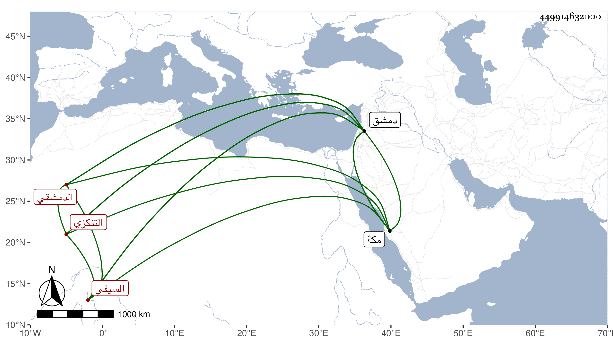

0902Sakhawi.DawLamic.ITO20230111-ara1.EIS1600.449914632000
Biography ID: 449914632000
346
عبد الرحمن بن محمد بن طولوبغا أسد الدين بن المحدث ناصر الدين السيفي التنكزي الدمشقي . ولد في ربيع الأول سنة ست وأربعين وسبعمائة بدمشق واعتنى به أبوه فأحضره على الحافظ الذهبي وأبي الفرج بن عبد الهادي والبهاء على بن العز عمر وعبد القادر بن القرشية وأحمد بن عبد الرحمن المرداوي وعبد الرحيم بن إبراهيم بن أبي اليسر وأبي بكر بن عبد العزيز بن رمضان وعبد الغالب الماكسيني ويوسف بن محمد بن نجم ومحمد بن إسماعيل بن الخباز وأخته زينب وعمتها نفيسة ابنة إبراهيم وفاطمة ابنة نصر الله بن محمد وفاطمة ابنة العز في آخرين الكثير ، ومات أبوه قبل بلوغه سن السماع ولذا لم نر له شيئا سمعه إلا حضورا كما قاله الحافظ ابن موسى وأجاز له داود بن إبراهيم العطار ومحمد بن عمر السلاوي وعبد الحميد بن علي القرشي وخلق وحدث بالكثير وانفرد وحمل عنه الأكابر بل ألحق الاصاغر بهم ، وممن لقيه بدمشق ابن موسى والأبي فأكثرا عنه وأكثر عنه أيضا الشهاب بن زيد ولقيه شيخنا بمكة في سنة أربع وعشرين وقد أسن فأخذ عنه أشياء وكذا استجازه شيخنا ابن خضر وابن قمر بإفادته وسمع عليه التقي بن فهد وبنوه . ومات في ذي القعدة سنة خمس وعشرين بدمشق وهو في عقود المقريزي رحمه الله .
